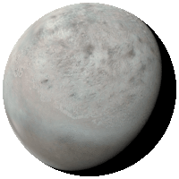

Discovery
Triton was discovered on Oct. 10, 1846 by British astronomer William Lassell, just 17 days after Neptune itself was discovered.
Overview
Triton is the largest of Neptune's 13 moons. It is unusual because it is the only large moon in our solar system that orbits in the opposite direction of its planet's rotation―a retrograde orbit.
Scientists think Triton is a Kuiper Belt Object captured by Neptune's gravity millions of years ago. It shares many similarities with Pluto, the best known world of the Kuiper Belt.
Like our own moon, Triton is locked in synchronous rotation with Neptune―one side faces the planet at all times. But because of its unusual orbital inclination both polar regions take turns facing the Sun.
Triton has a diameter of 1,680 miles (2,700 kilometers). Spacecraft images show the moon has a sparsely cratered surface with smooth volcanic plains, mounds and round pits formed by icy lava flows. Triton consists of a crust of frozen nitrogen over an icy mantle believed to cover a core of rock and metal. Triton has a density about twice that of water. This is a higher density than that measured for almost any other satellite of an outer planet. Europa and Io have higher densities. This implies that Triton contains more rock in its interior than the icy satellites of Saturn and Uranus.
Triton's thin atmosphere is composed mainly of nitrogen with small amounts of methane. This atmosphere most likely originates from Triton's volcanic activity, which is driven by seasonal heating by the Sun. Triton, Io and Venus are the only bodies in the solar system besides Earth that are known to be volcanically active at the present time.
Triton is one of the coolest objects in our solar system. It is so cold that most of Triton's nitrogen is condensed as frost, giving its surface an icy sheen that reflects 70 percent of the sunlight that hits it.
NASA's Voyager 2―the only spacecraft to fly past Neptune and Triton―found surface temperatures of -391degrees Fahrenheit (-235 degrees Celsius). During its 1989 flyby, Voyager 2 also found Triton has active geysers, making it one of the few geologically active moons in our solar system.
How Triton Got Its Name
Triton is named after the son of Poseidon (the Greek god comparable to the Roman Neptune). Until the discovery of the second moon Nereid in 1949, Triton was commonly known as simply "the satellite of Neptune."